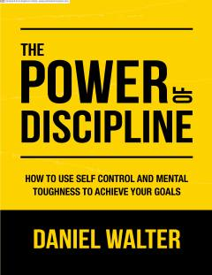

IKO'z-o'zini intizom va nazorat qilish orqali maqsadlaringizga erishish sirlarini o'rganing.
Ushbu kitob o'z-o'zini tarbiyalash, o'z-o'zini nazorat qilish va maqsadlarga erishishda qattiqqo'llikning muhimligini o'rgatadi. Daniel Valter o'quvchilarga hayotni o'zgartiradigan odatlarni yaratish, yomon odatlarni yo'q qilish va shaxsiy rivojlanishga erishish yo'llarini ko'rsatib beradi.